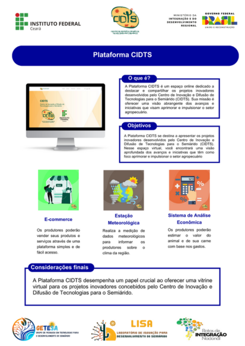

Plataforma CIDTS

O que é?
A Plataforma CIDTS é um espaço online dedicado a destacar e compartilhar os projetos inovadores desenvolvidos pelo Centro de Inovação e Difusão de Tecnologias para o Semiárido (CIDTS). Sua missão é oferecer uma visão abrangente dos avanços e iniciativas que visam aprimorar e impulsionar o setor agropecuário.
Objetivo
A Plataforma CIDTS se destina a apresentar os projetos inovadores desenvolvidos pelo Centro de Inovação e Difusão de Tecnologias para o Semiárido (CIDTS). Nesse espaço virtual, você encontrará uma visão aprofundada dos avanços e iniciativas que têm como foco aprimorar e impulsionar o setor agropecuário